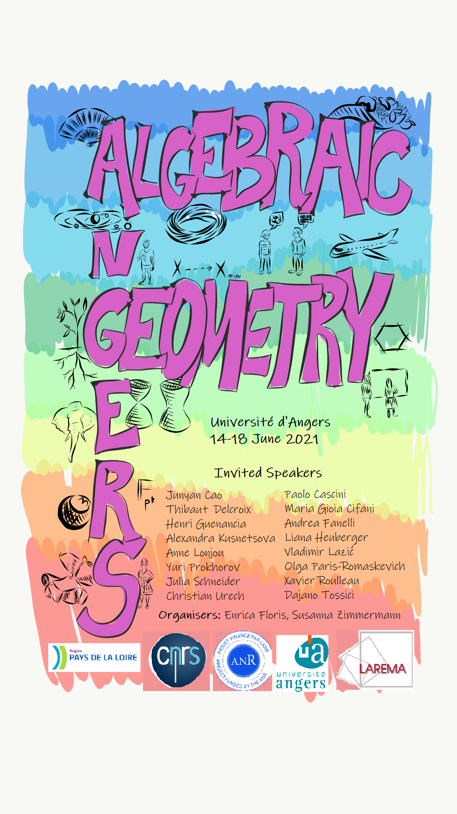

We gratefully acknowledge support from:
Projet Etoiles Montantes 2019
La Région Pays de la Loire
Université d'Angers
CNRS


14 - 18 June 2021, in Angers
|

|
|
The registration is closed.
|
Monday 14 June |
Tuesday 15 June |
Wednesday 16 June |
Thursday 17 June |
Friday 18 June |
| *=virtual talk |
9h45-10h45 Cao* 11h-12h Delcroix |
9h45-10h45 Urech* 11h-12h Lazic* |
9h45-10h45 Lonjou* 11h-12h Paris-Romaskevich* |
9h45-10h45 Roulleau 11h-12h Patakfalvi* |
14h15-15h15 Guenancia 15h30-16h30 Heuberger 16h45-17h45 Prokhorov* |
14h15-15h15 Cascini* 15h15-15h45 GatherTown 15h45-16h45 Schneider |
14h15-15h15 Tossici 15h45-16h45 Kusnetsova* |
14h15-15h15 Cifani 15h15-15h45 GatherTown 15h45-16h45 Fanelli |
Polytech d'Angers (Université d'Angers), Campus Belle-Beille, Amphi A
Here is a map link
Take Bus 1 at train station, direction Belle-Beille, stop Notre Dame Du Lac or stop Polytech Angers
The conference room is at the back of the building
|
|
On extension of pluricanonical forms defined on the central fiber of a Kähler family We will report on a recent joint work with M. Paun. We obtain an extension criterion for the canonical forms defined on an infinitesimal neighborhood of the central fiber of a family of Kähler manifolds. We will present some aspects of the proof of our main result, as well as its application to the extension of pluricanonical forms. Birational geometry of foliations on a complex threefold Many results in the classical minimal model program, such as the existence of flips and the base point free theorem, admit a natural generalisation to the category of foliations defined over a complex threefold. Other results, instead, seem to behave differently, such as existence of flops and canonical models. I will survey about some of the recent progress in this direction. Joint work with C. Spicer. On an effective YTD conjecture for multiplicity free manifolds The YTD conjecture relates the existence of constant scalar curvature Kähler metrics with an algebro-geometric condition called K-stability. The correct notion of K-stability to be used in this correspondence is not known precisely. An effective version of the YTD conjecture would be involving a K-stability condition that can be checked effectively on large families of examples. The resolution of the YTD conjecture for Kähler-Einstein metrics by Chen, Donaldson and Sun provided striking examples of this: in this case, the K-stability condition can be checked effectively for manifolds with a large group action such as multiplicity free manifolds or T-manifolds of complexity one. In this talk, I will report on various recent advances and ongoing work on the YTD conjecture and more precisely on an effective YTD conjecture for cscK metrics on multiplicity free manifolds. Reconstructing curves from their Hodge classes Let S be a smooth algebraic surface in $P^3$. A curve C in S has a cohomology class [ C ] in $H^1( \Omega^1_S)$. Recently, Movasati and Sertöz pose several interesting questions about the reconstruction of C from its Hodge class. In particular they give the notion of a perfect class: the Hodge class of a curve C is perfect if its annihilator is a sum of ideals of curves C whose Hodge class is a nonzero rational multiple of that of C. I will report on a joint work with Gian Pietro Pirola and Enrico Schlensiger, in which we give an answer to some of these questions: in particular, we show that the Hodge class of a smooth rational quartic on a surface of degree 4 is not perfect, and that the Hodge class of an arithmetically Cohen-Macaulay curve is always perfect. Rational simple connectedness and Fano threefolds. The notion of rational simple connectedness can be seen as an algebro-geometric analogue of simple connectedness in topology. The work of de Jong, He and Starr has already produced several recent studies to understand this notion. In this talk I will discuss the joint project with Laurent Gruson and Nicolas Perrin to study rational simple connectedness for Fano threefolds via explicit methods from birational geometry. A decomposition theorem for singular Calabi-Yau varieties Let $X$ be a compact Kähler manifold with trivial first Chern class. The Beauville-Bogomolov decomposition theorem (1984) asserts that there exists a finite unramified cover $X'\to X$ such that $X'$ is a product of a torus by irreducible varieties of two types (Calabi-Yau or holomorphic symplectic). The generalization of that statement to singular varieties arising from the Minimal Model Program was obtained in 2017 by Höring-Peternell in the projective case, relying among other things on earlier works of Druel and Greb-Guenancia-Kebekus. In this talk, I will explain how to obtain the general Kähler case thanks to deformation theoretic arguments. This is joint work with Ben Bakker and Christian Lehn. Q-Fano constructions using Laurent inversion Mirror symmetry conjecturally associates to a Fano orbifold a (very special type of) Laurent polynomial. Laurent inversion is a method for reversing this process, obtaining a Fano variety from a candidate Laurent polynomial. We apply this to construct previously unknown Fano 3-folds with terminal quotient singularities. A Laurent polynomial f determines, through its Newton polytope P, a toric variety X_P, which is in general highly singular. Laurent inversion constructs, from f and some auxiliary data, an embedding of X_P into an ambient toric variety Y. In many cases this embeds X_P as a complete intersection of line bundles on Y, and the general section of these line bundles is the Q-Fano 3-fold that we wanted to construct, i.e. the mirror of f. Bogomolov-Guan manifolds The only known example of a non-Kähler irreducible holomorphic symplectic manifold was described in works of Bogomolov and Guan. I am going to explain the construction and tell some results about the geometry of such manifolds. In particular, I will show that the algebraic reduction of a BG-manifold is isomorphic to a projective space and prove that the group of regular automorphisms of it is Jordan. It is a joint work with F. Bogomolov, N. Kurnosov and E. Yasinsky. Recent progress on the existence of minimal models In this talk I will present some recent progress on the existence of minimal models for varieties with mild singularities, as well as on the termination of flips in low dimensions. This progress is made possible by considering the category of generalised pairs, which appears naturally in several contexts. I will present joint work with Nikolaos Tsakanikas and touch upon recent works of Chen-Tsakanikas and Moraga. Actions of Cremona groups on CAT(0) cube complexes Part II Let X be a variety and Bir(X) its group of birational transformations. Recently, in geometric group theory, actions of groups on CAT(0) cube complexes have turned out to be a useful tool to study various groups. In these two talks (Part I by C. Urech and Part II by A. Lonjou), we will explain various constructions of CAT(0) cube complexes on which Bir(X) acts by isometries and explain how we can deduce new and old group theoretical and dynamical results about Bir(X) from these actions. We will also report on work in progress with Anthony Genevois about regularization results for Cremona groups over finite fields. Slow holomorphic dynamics and polynomial entropy The maps with chaotic dynamics represent a great interest and have been studied in detail, in various dynamical contexts. In this talk, I will be interested in the maps living on the opposite edge of the spectrum - maps with the dynamics of low complexity. They can be defined, for example, as those that have zero topological entropy. To quantify the complexity of such maps, one can consider a slower, polynomial entropy. I will give an introduction to polynomial entropy, with a focus on the low complexity holomorphic dynamics, following our joint work with Serge Cantat. Update on the existence of the moduli space of stable surfaces in mixed characteristic Stable surfaces are the 2 dimensional generalizations of stable curves. The existence of the moduli space of stable curves is known over Z since the works of Deligne and Mumford for the fine moduli stack, and since the work Mumford for the course moduli space. Both works are over 50 years old. On the other hand, for stable surfaces the construction of the moduli space in mixed characteristic is an ongoing project. I will give an update on the present situation, after the recent advances in mixed characteristic minimal model theory. Rationality of Fano 3-folds over nonclosed fields The rationality problem for smooth Fano threefolds over algebraically closed fields is basically solved. In this talk I will discuss rationality of forms of these Fanos over nonclosed fields of characteristic 0, as well as, rationality singular Fano 3-folds with mild singularities. I will concentrate on the case where the Picard number equals 1. Part of the results are based on joint works with Alexander Kuznetsov. Generalised Kummer structures and moduli of generalised Kummer surfaces A generalised Kummer surface X is the resolution of the quotient of a complex 2-torus A by an order 3 automorphism group G_A. If (B,G_B) is another complex 2-torus such that the associated generalised Kummer surface is isomorphic to X, we say that (B,G_B) is a generalised Kummer structure on X. The aim of the talk will be to understand the number of these generalised Kummer structures, and the moduli space of these surfaces, when suitably polarised (in a certain sense when the surface is non-algebraic). We will see that when X is algebraic or not the results are quite different. Generating the plane Cremona group by involutions Let k be a number field, or a finite field, and consider the birational transformations of the projective plane that are defined over k. I will discuss how to decompose such maps into involutions. In other words, I will show that the plane Cremona group over these fields is generated by involutions. This is joint work in progress with Stéphane Lamy. Special groups and essential dimension I will present a joint work with Zinovy Reichstein. In 1958 J.-.P. Serre defined an algebraic group G over a field k to be special if every G-(fppf) torsor is locally trivial in the Zariski topology. We prove that this is equivalent to ask that every G-torsor over an extension field of k is trivial, which means that G has essential dimension zero. The notion of the essential dimension of an algebraic group will be recalled in the talk. We will connect this result to the Grothendieck-Serre conjecture and we propose a generalization of this conjecture. Actions of Cremona groups on CAT(0) cube complexes Part I Let X be a variety and Bir(X) its group of birational transformations. Recently, in geometric group theory, actions of groups on CAT(0) cube complexes have turned out to be a useful tool to study various groups. In these two talks (Part I by C. Urech and Part II by A. Lonjou), we will explain various constructions of CAT(0) cube complexes on which Bir(X) acts by isometries and explain how we can deduce new and old group theoretical and dynamical results about Bir(X) from these actions. We will also report on work in progress with Anthony Genevois about regularization results for Cremona groups over finite fields. |
(*= virtual participation)
Marwan Benyoussef* (Berlin)
Junyan Cao* (Nice)
Livia Campo* (Birmingham)
Paolo Cascini* (Imperial College)
Maria Gioia Cifani (Pavia)
Olivier de Gaay Fortman (ENS Paris)
Thibaut Delcroix (Montpellier)
Francesco Denisi (Nancy)
Romaine Demelle (Poitiers)
Clara Dérand (Nancy)
Matteo Doni (Milano)
Andrea Fanelli (Bordeaux)
Amelie Flatt* (Berlin)
Enrica Floris (Poitiers)
Céline Gachet (Nice)
Maria Rosario Gonzalez-Dorrego* (UAM)
Bianca Goutier (Bordeaux)
Henri Guenancia (Toulouse)
Kacper Grzelakowski* (Łódź)
Liana Heuberger (Angers)
Michael Hoff* (Saarbrücken)
Alexandra Kusnetsova* (Moscow)
Stéphane Lamy (Toulouse)
Vlad Lazic* (Saarbrücken)
Lucas Li Bassi (Milano)
Anne Lonjou* (Orsay)
Etienne Mann (Angers)
Irène Meunier (Toulouse)
John Christian Ottem* (Oslo)
Gianluca Pacienza* (Nancy)
Erik Paemurru (Basel)
Olga Paris-Romaskevich* (Lyon)
Zsolt Patakfalvi* (Lausanne)
Mihai-Cosmin Pavel (Lille)
Andrea Petracci* (Berlin)
Simone Pesatori (Roma Tre)
Renata Picciotto (Angers)
Constantin Podelski* (Berlin)
Elisa Postinghel* (Trento)
Quentin Posva (Lausanne)
Yuri Prokhorov* (Moscow)
Andriy Regeta* (Jena)
Joaquim Roé* (Barcelona)
Xavier Roulleau (Marseille)
Eliane Salem* (Berlin)
Julia Schneider (Toulouse)
Axel Supersac (Angers)
Kaori Suzuki* (Yokohama)
John Taflin* (Bourgogne)
Dajano Tossici (Bordeaux)
Christian Urech* (Lausanne)
Immanuel Van Santen (Basel)
Léa Villeneuve (Poitiers)
Sridhar Venkatesh* (Michigan)
Zhixin Xie (Nice)
Yirui Xiong* (Sheffield)
Egor Yasinsky (Basel)
Susanna Zimmermann (Angers)
Enrica Floris (Poitiers)
Susanna Zimmermann (Angers)
We gratefully acknowledge support from:
Projet Etoiles Montantes 2019
La Région Pays de la Loire
Université d'Angers
CNRS